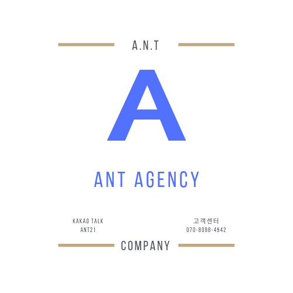

ANT

구글상위노출이란?
구글 검색란에키워드 검색 시
1페이지(상위)에 노출이 되는 것을 뜻 합니다.
[ANT AGENCY]
구글상위노출
구글 키워드 검색 시 상위에 노출작업
웹문서노출
키워드 검색 시 웹문서 상위에 노출작업
구글광고대행
각종 광고, 각종홍보, 구글애드워즈, 구글지도등록, 구글빽링크작업
사이트제작
원하시는 이미지로 사이트제작
Please enable JavaScript to view the
comments powered by Disqus.